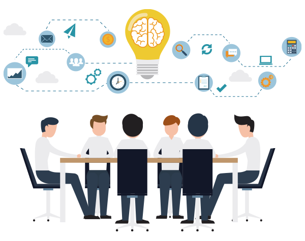
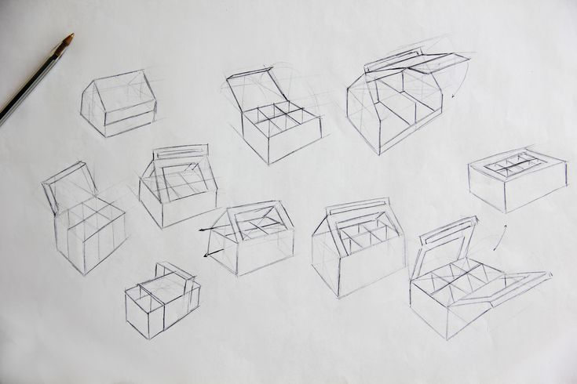
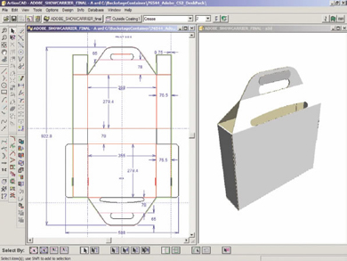
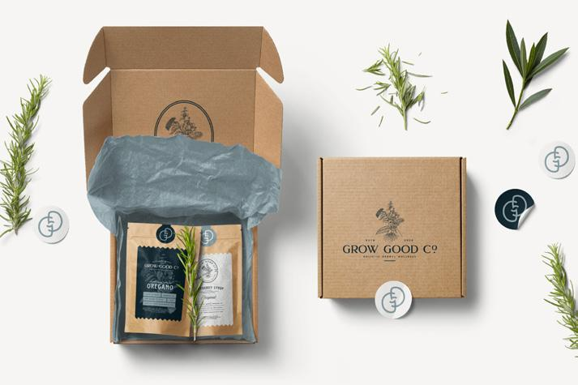
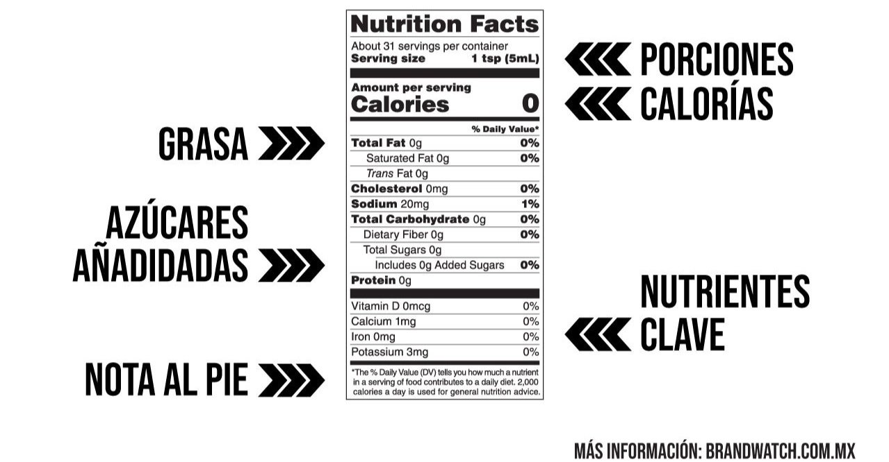
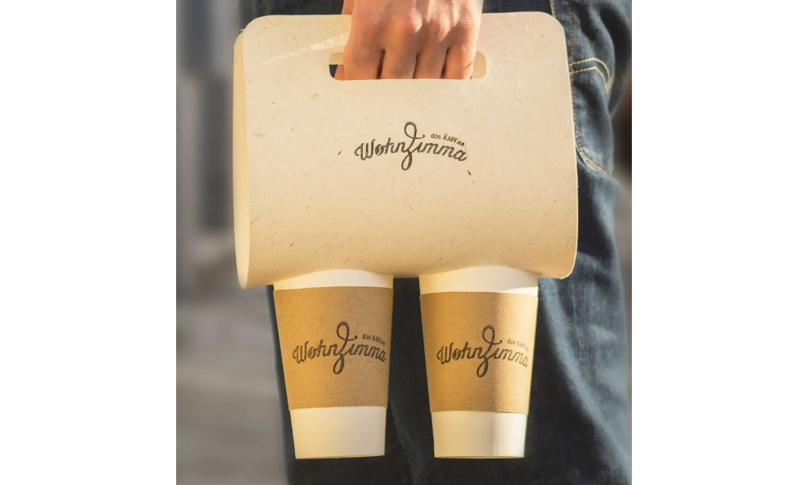
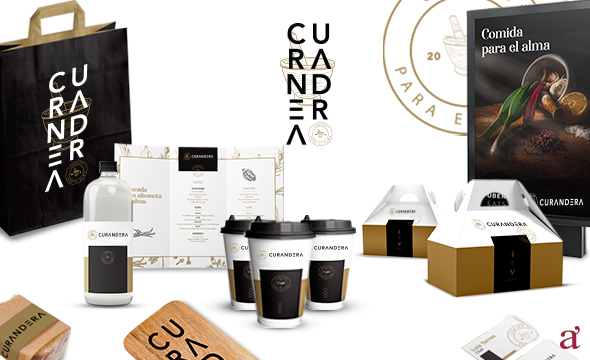

Análisis inicial e instrucciones:
- Reunión con el cliente para entender las necesidades del producto (tipo, tamaño, peso, fragilidad), el público objetivo y los objetivos de marketing.
- Definición de requisitos específicos, como materiales, presupuesto y normativas (por ejemplo, etiquetado legal).
|

|
Conceptualización creativa:
- Desarrollo de ideas iniciales para el diseño, incluyendo estilo visual, colores y tipografía que reflejen la identidad de la marca.
- Creación de bocetos o propuestas preliminares para el empaque.
|

|
Diseño estructural:
- Planificación de la forma y funcionalidad del empaque (cajas, bolsas, botellas, etc.), considerando ergonomía, almacenamiento y transporte.
- Elaboración de prototipos o maquetas en 2D/3D para evaluar la viabilidad.
|

|
Diseño gráfico:
- Creación de la parte visual del empaque, incluyendo logotipos, ilustraciones, imágenes y textos (como nombre del producto, descripción, ingredientes o instrucciones).
- Uso de jerarquías visuales para destacar información clave y atraer al consumidor.
|

|
Selección de materiales:
- Asesoramiento sobre opciones de materiales (cartón, plástico, vidrio, etc.) según el producto, la sostenibilidad y el presupuesto.
- Consideración de acabados (mate, brillante, texturizado) y técnicas de impresión.
|
.jpg)
|
Cumplimiento normativo:
- Asegurarse de que el diseño cumpla con regulaciones locales o internacionales (por ejemplo, etiquetas de seguridad, reciclaje o información nutricional).
|

|
Pruebas y ajustes:
- Revisión de prototipos físicos o digitales para evaluar funcionalidad, resistencia y estética.
- Incorporación de retroalimentación del cliente para perfeccionar el diseño.
|

|
Entrega de archivos finales:
- Preparación de archivos listos para producción (plantillas de corte, diseños en alta resolución) compatibles con los procesos de fabricación o impresión.
|
 |
|
|
.jpg) GLOW RUSH
GLOW RUSH
.png)
.png)